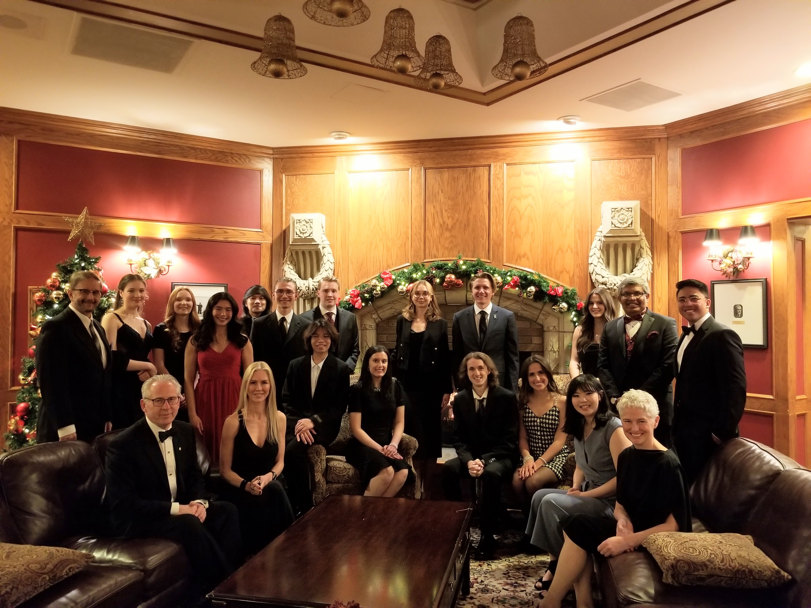
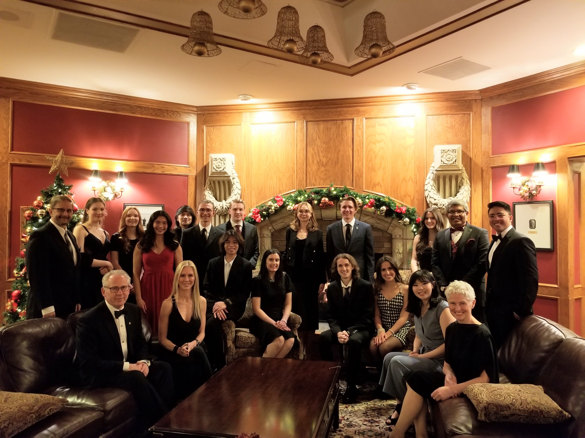

Janis Pak
Welcome to my website 😀
A little bit about me:
Hello 👋 My name is Janis and I’m a preservice teacher in my fourth year of studies at the University of Calgary. I am in the process of completing the concurrent program. My other degree is in International Relations with a specialization in international economy in the Asia-Pacific region. I also teach piano part-time. This is my second year of teaching piano. My concentration for education is in elementary science, but I have a wide range of interests beyond teaching science. I would also love to teach music, language arts, a second language (Spanish, French, Mandarin, or Japanese), math, or social studies! I see myself teaching grades 2, 3, or 4.
Visit the Who Am I tab to find out why I chose to go into teaching!

 
